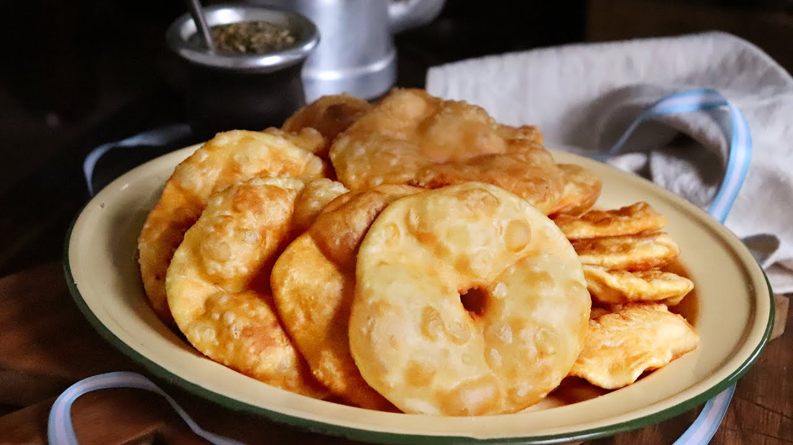
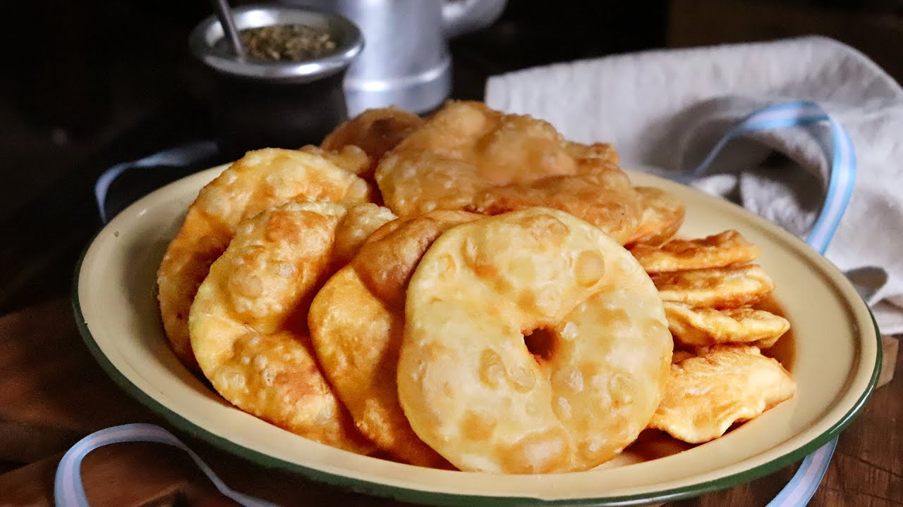

Tortafritas
| Ingredientes |
Cantidad |
| Harina |
1/2 kg. |
| Manteca |
4 cucharadas |
| Agua tibia. |
400 cc. |
| Sal |
2 cucharadas |
| Aceite/grasa |
Cantidad para freir |
Ingredientes
- 1/2 kg de harina
- 4 cucharadas de manteca
- 1/2 taza de agua tibia
- 2 cucharadas de sal
- Aceite o grasa para freir, cantidad necesaria
Modo de preparacion
- Poner en un bol la harina y colocar en el centro la grasa a temperatura ambiente.
- Con los dedos ir tomando la masa y agregando de a poco el agua con sal y seguir hasta formr un bollo.
- Amasar energicamente hasta que a masa forme ampollas en su supericie.
- dejar reposar durante 1 o dos horas, luego cortar en pequeñas pelotitas, achatarlos con la palma de la mano y pinchar con un tenedor.
- Freirlas en abundante aceite o grasa caliente, retirar con espumadera y dejar sobre papel para que se escurran.
- Disfrutar.